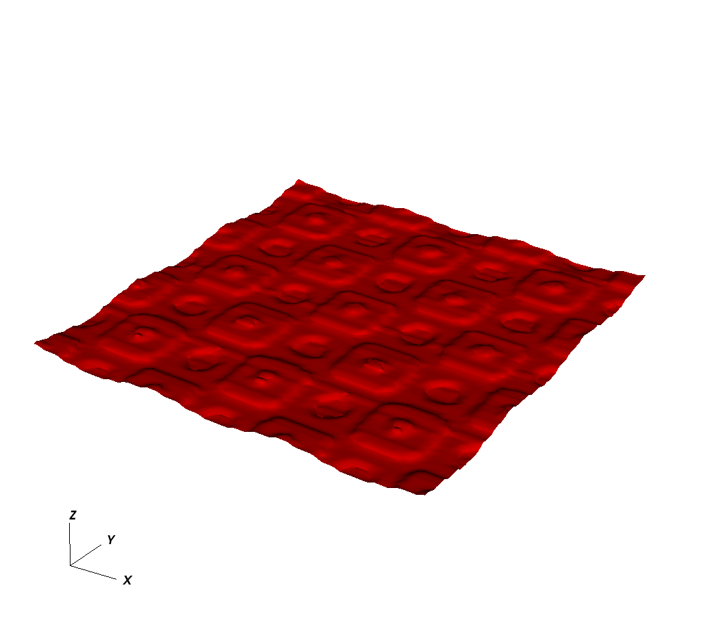
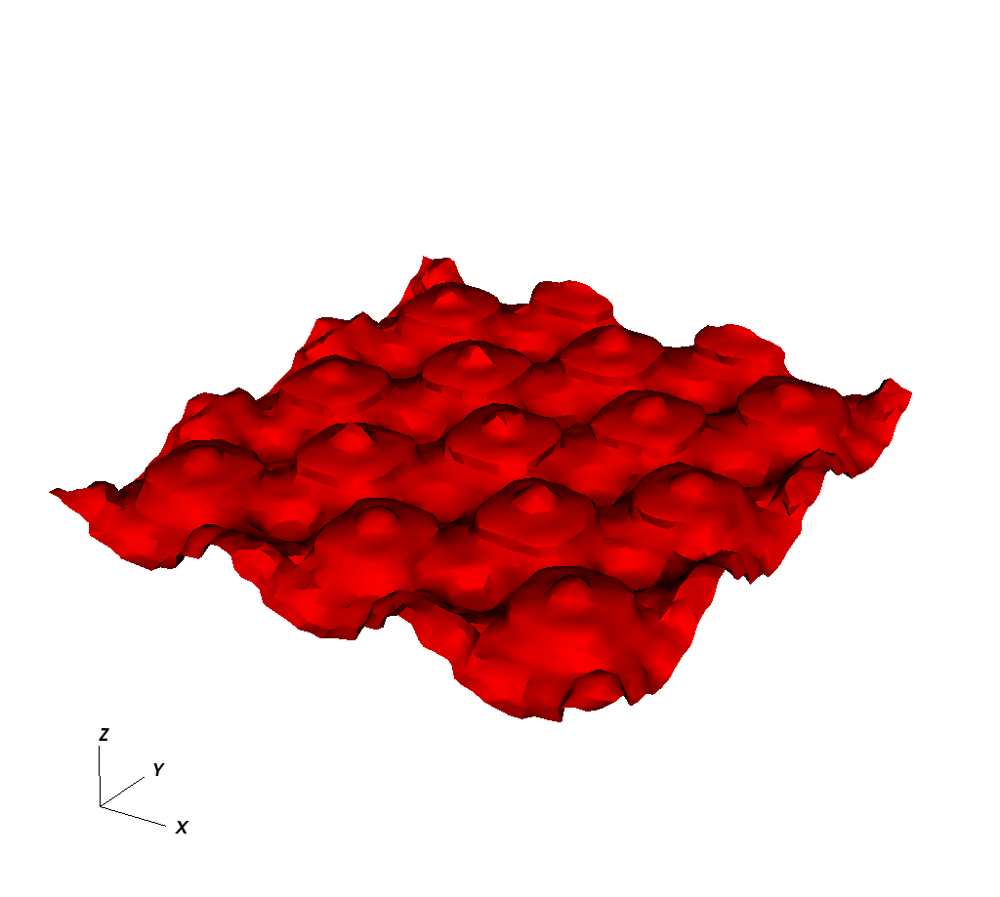
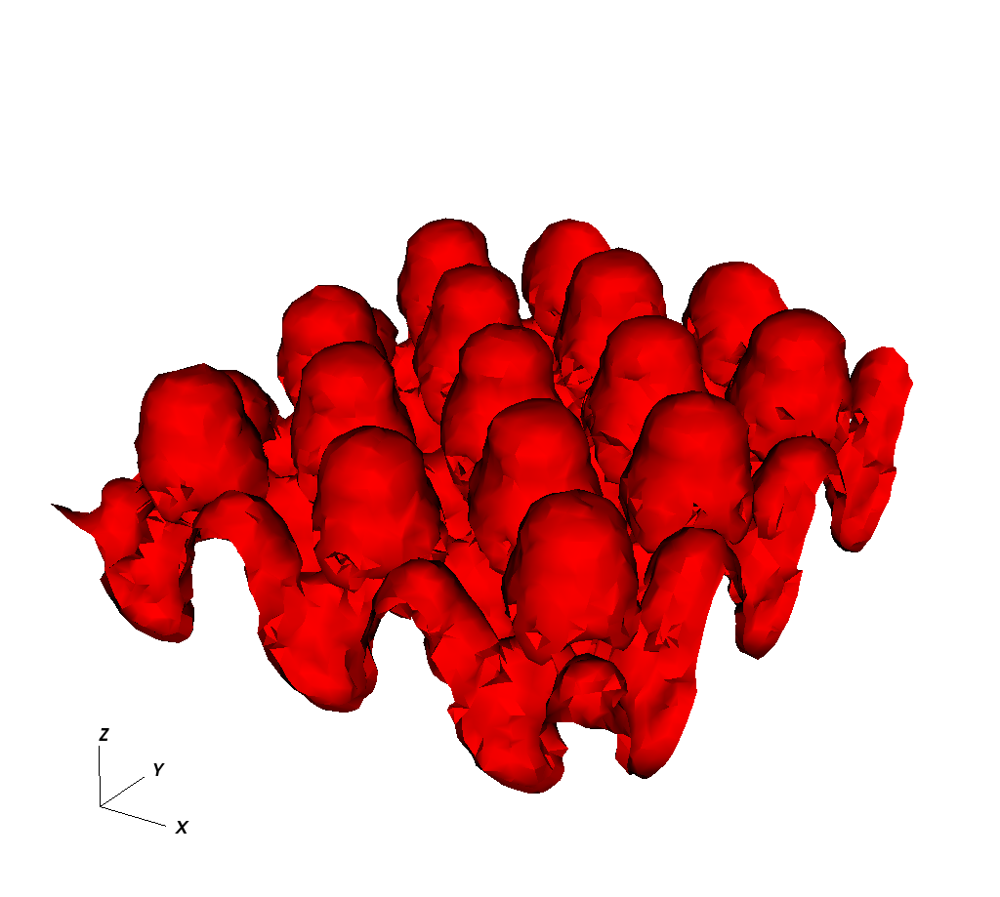
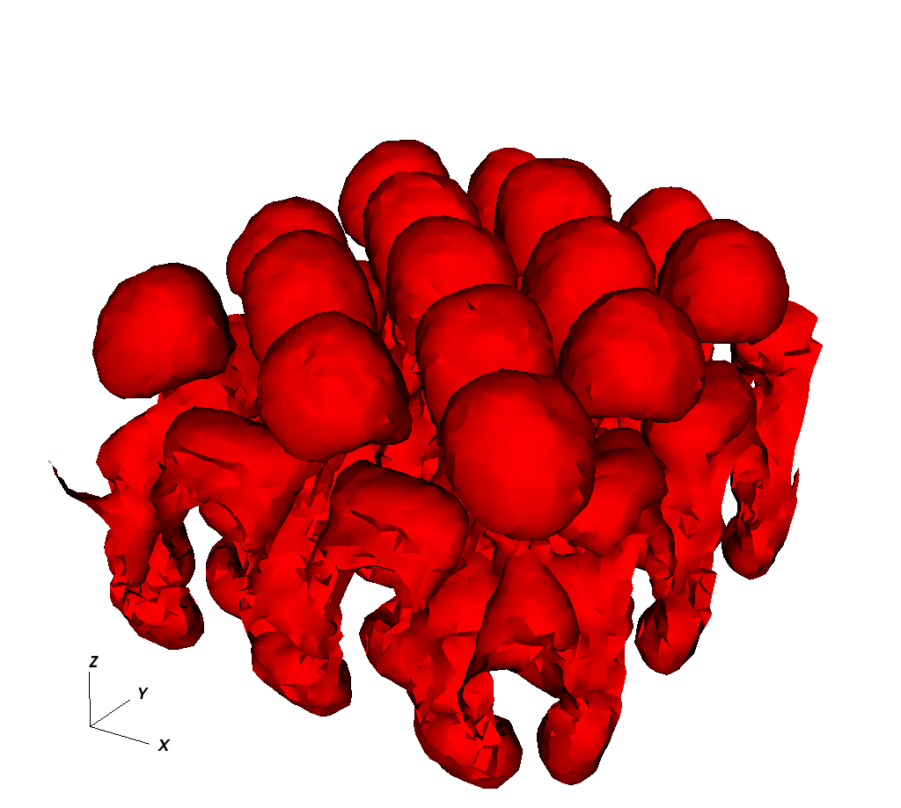

|
Lagrangian Particle Code 2 for Compressible Fluid Dynamics
|
A new Lagrangian particle method for solving Euler equations for compressible inviscid fluid or gas flows is developed by Roman Samulyak, Xingyu Wang and Hsin-chiang Chen at Stony Brook University. The preliminary results has been submitted to the Journal of Computational Physics (2017). Similar to Smoothed Particle Hydrodynamics (SPH), the method represents fluid cells with Lagrangian particles and is suitable for the simulation of complex free surface / multiphase flows. The main contributions of our method, which is different from SPH in all other aspects, are
(a) significant improvement of approximation of differential operators based on a polynomial fit via weighted least squares approximation and the convergence of prescribed order,
(b) a second-order particle-based algorithm that reduces to the first-order upwind method at local extremal points, providing accuracy and long term stability,
(c) accurate resolution of states at free interfaces. The method is generalizable to coupled hyperbolic-elliptic systems.
Numerical verification tests demonstrating the convergence order are presented below as well as examples of complex two-phase and free surface flows.
The Lagrangian Particle code 2 implements the proposed Lagrangian Particle method and is capable of simulating 1D, 2D and 3D fluid dynamics. It is a OpenMP parallel C++ code, which current speed up is 11.62 for 24 cores. As the name implies, this is the second version of Lagrangian Particle code. Hsin-chiang Chen published the first version in 2015, and Xingyu Wang has been the main developer of the code since then. With the new added nearly 100 modules and more than 15,000 lines of C++ code, Lagrangian Particle code 2 now supports
(a) second order Lax-Wendroff scheme, which reduces the error up to three orders of magnitude compared to the previously used upwind scheme,
(b) SPH density estimator and Voronoi density estimator, which conserves entropy better than the previous used PDE density updater,
(c) periodic, inflow and outflow boundary conditions,
(d) more geometry, boundary and initial state.
| dx | Error | Ratio | Order |
|---|---|---|---|
| 0.04 | 2.35e-02 | - | - |
| 0.02 | 5.61e-03 | 4.19 | 2.07 |
| 0.01 | 9.72e-04 | 5.77 | 2.53 |
| 0.005 | 2.12e-04 | 4.58 | 2.20 |

t=0 |

t=3 |

t=6 |

t=8.5 |
Created on: 2017/10/30
1.8.14